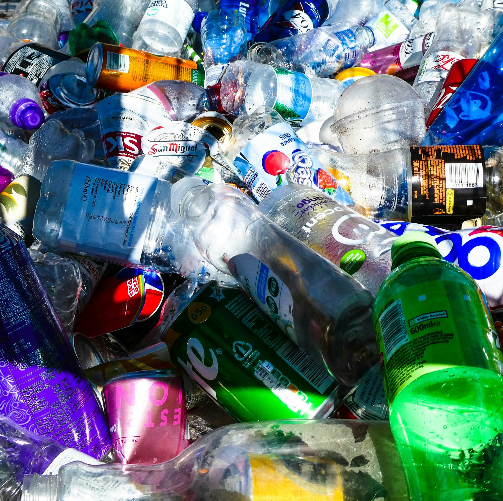
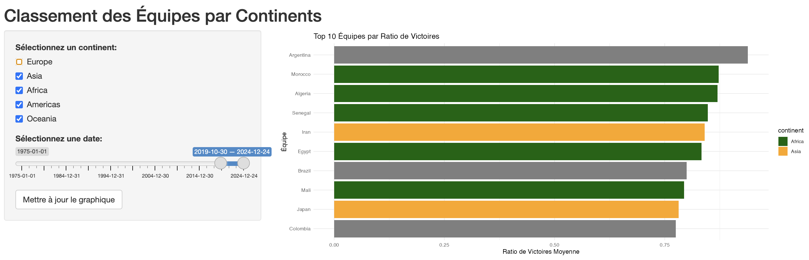

Bienvenue Dans MonPortfolio

BADIS BENSALEM
Explorez l’univers dans lequel j’évolue et découvrez les projets sur lesquels je me concentre.

Mes Compétences en Programmation
- R - Analyse de données, visualisation, modélisation statistique
- Python - Data Science, Automatisation, Développement Web
- SQL - Gestion de bases de données, requêtes SQL complexes
- Java - Développement d'applications logicielles
- HTML - Création de sites web, structuration de contenu
- Excel - Analyse de données, création de rapports, macros
Badis Portfolio
DATA SCIENTIST en SANTE
Mon portfolio est le reflet de mes compétences, de mes projets et de mes réalisations. Il me permet de mettre en avant mon expertise, ma touche personnelle qui constitue ma valeur ajoutée, et de présenter concrètement ce que je peux apporter à un projet ou à un collaborateur
Mon esprit d’ingénieur m’incite à optimiser chaque action et à prendre des décisions fondées sur un raisonnement de bénéfice-risque. Mes centres d’intérêt couvrent des domaines variés, comme la biologie, l’écologie et la santé, et abordent des enjeux d’envergure tels que la géopolitique, le climat et la santé publique. Curieux et en constante évolution, je m’efforce d’apprendre sans limites.
Mes projets
Capsul corp.
Capsules d’eau à base d’algues
Plus d'informationsCapsules d’eau à base d’algues
Boire en innovant
Mon idée est née lors d’un concours organisé en L3 dans ma spécialité ingénierie, où nous devions concevoir un aliment encore jamais commercialisé, innovant, et visant à réduire les emballages plastiques. C’est ainsi que le projet des capsules d’eau à base d’algues est né. Ces capsules fonctionnent comme des capsules pour machines à laver, mais elles permettent d’y introduire des liquides de toutes sortes, indépendamment de leur nature, tout en éliminant le plastique.

Dans un monde où la conscience environnementale s'éveille et où les déchets plastiques étouffent notre planète, il est impératif de repenser notre manière de :consommer, y compris l'eau que nous buvons. C'est dans ce contexte que notre idée novatrice de capsules d'eau à base de gel d'algues a pris forme.
Cette solution de capsule d’eau répond à un besoin dans un monde où les tendances évoluent, où les mentalités changent, et où les personnes sont de plus en plus concernées par la pollution. C’est un moyen innovant et amusant de changer le monde.
Room-Harmony
Une Chambre Pour Tous
Plus d'informationsRoom-Harmony
Une Chambre Pour Tous
Dans le cadre d’un projet professionnalisant en dehors de mes études, j’ai développé un algorithme d’attribution de chambres pour un séjour étudiant. Ma mission consistait à garantir une organisation optimale tout en respectant les préférences des participants. La première étape a été de concevoir un questionnaire précis afin de collecter des données fiables et exploitables. Ensuite, j’ai développé un algorithme sous RStudio permettant d’attribuer des binômes selon les préférences exprimées et de former des chambres de 4 personnes tout en respectant des règles claires. Ce projet m’a initié à la programmation algorithmique, au nettoyage et à l’analyse des données, et m’a permis d’appréhender les nombreuses possibilités offertes par R pour résoudre des problématiques organisationnelles.

La difficulté résidait dans la collecte des données et des informations pour tout le monde, tout en respectant les choix de chacun. Parfois, nous avions des binômes réciproques, d’autres fois non, et il y avait aussi des personnes qui ne savaient pas avec qui elles voulaient être. Parfois, cela devenait un cercle vicieux.
Cette fonction illustre bien la complexité du programme en permettant de déterminer les cycles au sein d’un groupe de personnes, un peu comme un serpent qui se mord la queue. Par exemple, si la personne A veut être avec la personne B, B veut être avec C, et C veut être avec A, cela forme un cycle. Le programme commence par collecter les relations entre chaque individu, puis suit les liens d’une personne à l’autre pour identifier les cycles qui se forment. Lorsque le programme détecte un cycle, il l’ajoute à une liste. Cependant, pour éviter les doublons, il vérifie que le cycle n’a pas déjà été trouvé.
Ce processus permet de visualiser la façon dont les relations circulent dans le groupe, même si parfois certaines personnes ne savent pas avec qui elles veulent être. Cette incertitude complique la formation des cycles, car il peut y avoir des personnes qui n’ont pas de préférence claire, ou des situations où les relations deviennent circulaires et auto-référentielles, rendant l’identification des cycles plus difficile.
Triomphe-National
Programme mon beau programme qui est le plus fort
Plus d'informationsTriomphe-National
Programme mon beau programme qui est le plus fort
Mon projet personnel en football consiste à déterminer les équipes nationales qui gagnent le plus de matchs en fonction du ratio de matchs gagnés. Pour cela, j’ai développé une application Shiny sur RStudio. Afin d’obtenir les données nécessaires, j’ai utilisé le web scraping pour extraire les informations de tous les matchs des équipes nationales depuis 1975 jusqu’en 2024. Ce processus a impliqué de nettoyer les données pour éliminer les erreurs et incohérences, ainsi que de structurer les informations de manière à en extraire des éléments utiles pour l’analyse

Sur l’application, on peut modifier l’année de début et l’année de fin pour explorer l’historique des matchs. Il est également possible de sélectionner les continents pour les comparer entre eux, avec des couleurs distinctes pour différencier chaque continent.
C’est l’un de mes premiers projets de web scraping et de création d’application Shiny. Ce projet m’a permis de découvrir les nombreuses possibilités offertes par RStudio et m’a ouvert des portes dans le domaine de la programmation. Il m’a également permis de mieux comprendre l’étendue des outils pour analyser et visualiser des données complexes.

Projet scolaire
Ce que j’ai appris à faire
Plus d'informationsProjet scolaire
Ce que j’ai appris à faire
Dans le cadre de mes cours de Data Science, j’ai travaillé sur plusieurs projets utilisant des techniques statistiques avancées telles que la régression linéaire, l’analyse en composantes principales (ACP), et d’autres méthodes. J’ai notamment simulé des données suivant une loi normale et un modèle de régression linéaire simple.
Dans le cadre de mes travaux en Data Science, j’ai utilisé le correlogramme pour explorer les corrélations entre différentes variables, ce qui m’a permis de mieux comprendre les relations entre elles et d’identifier des patterns intéressants. Par exemple, dans une analyse de régression linéaire, le correlogramme m’a aidé à vérifier la multicolinéarité entre les variables indépendantes, crucial pour assurer la validité des modèles statistiques.
’utilise des techniques de clustering, comme K-means ou la hiérarchisation, pour regrouper des objets ou observations similaires en catégories distinctes. Cela me permet d’analyser les données de manière ciblée et de faciliter la prise de décisions.

Soft Skills
Télécharger mon CV
Vous pouvez télécharger mon CV en cliquant sur le bouton ci-dessous :
Télécharger le CV